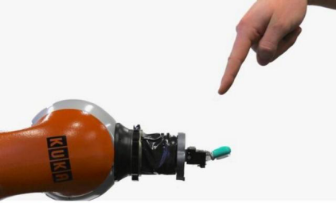
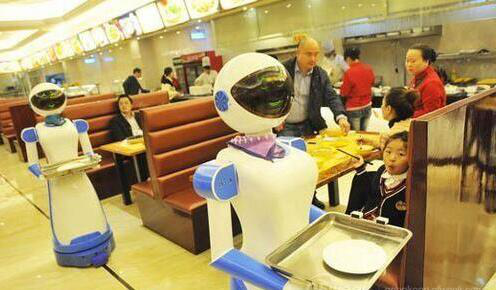

据国外媒体报道，德国科学家日前开发出了一套人工神经系统，可以让机器人感觉到疼痛，使其在面对潜在危险时能迅速做出反应，避免受到伤害，同时，也能保护站在身边的自然人类。研发人员介绍说，让机器人感觉到疼痛，其实并不困难，只需要在机器手臂上安装一个类似手指的传感器，他们就能探测到环境的压力和温度，而且这套系统也能把收到的感觉进行分类：轻度、中度和重度疼痛等等，依照不同程度的疼痛，启动相应的保护机制。事实上，如果编程者的数据足够强大，机器人的胳膊在被女朋友咬了一口之后，脸上甚至会出现一个痛苦的表情，且能跪下来发誓，再也不会偷看街上美女了。

这个生物版的机器人再次引发热议，科技人士关心的是，自己的理念能否完美变现，他们不在乎愚蠢的同类是否想得通，是否能接受；而社会学家则会再次扯出人性、伦理等道德层面的东西，他们害怕机器人抢走了自己的工作、情感和之于世界的主导权，总之，未来的50年内，自然人会时不时地陷入纠结和恐惧中，毕竟，科技在进步，机器人也会进步。
奴隶or朋友，机器如何表达情绪？
机器人诞生之初，最早的定义应该是人类的奴隶，他们要负责自然人类干不了和不想干的工作，在很长一段时间内，人类都盼望着机器人能更加地聪明，甚至能独立完成工作，因为世界上有那么多的工作都在等着机器人来完成，比如码头上重量极大的货物，只有机器人能搬得动，估计再不会有自然人喜欢扛大包了；手机PCBA上的电容、电阻和芯片，体积非常小，已经超出了人手能够控制的范围，更何况，焊接这些零件需要又快又准，无奈这些工作只能交给机器手臂；后来，人类变得更懒了，我们希望机器人能协助完成一些单调、无聊的工作，比如流水线上的组装、简单、枯燥，谁做谁都会吐，当自然人想吐的时候，他们就会把闷气撒到产品上，于是，效率和良品率都得不到保证，这就是为什么制造企业在规划未来时，言必称“自动化”；再有一类则是具有职业危害的工作，比如有害气体、粉尘、容易爆炸的抛光车间等等，在这些车间里装两个机器人，管理起来则会轻松惬意。

目前的情况，人类同机器之间虽然不是亲密无间，但总也算的上相安无事，现在的机器人没有情感，不用表达情绪，但也只能完成最基本的工作，事实上，倘若想要机器人完成更复杂的工作，势必要赋予机器表达情绪的权利：
如开篇所述，机器人在感受到疼痛之后，会启动相应的机制，从而保护自己以及身边的自然人，举个简单例子，现在企业、餐厅在导入机器人时，评估里都会加上一句：他们会不知疲倦地24小时工作...这种理念目光短浅，要知道任何机器的运转都是有极限的，而等到机器人出现问题时，企业又不得不安排大量的维护人员，最尴尬的是，用来维护机器的人员常常比之前直接从事劳作的人员还要多；倘若机器人足够敏感，他们会觉得累、觉得疼，觉得自己做出的产品会有问题，可以随时反馈给管理人员，在适当的时候调整工作强度，而不必非要等到机器人累到吐、累到报废才考虑停下来，这样不仅可以大大延长机器人的使用寿命，也能有效降低不良品所带来的重工成本，这都是目光长远的策略。
或许，笔者举得例子仅仅是最初级的应用，认为工作效率的提升不足以弥补高端机器人的研发成本，但按照大逻辑来讲：想要让机器人完成更复杂的工作，更加耐用，势必先要赋予其更丰富的权利，比如自主学习的权利、表达情绪的权利。
美丽世界，机器人可分一杯羹
机器人的疼痛之所以能引发广泛关注，一方面这标志科学技术的进步，有一些人常常因技术突破而享受到一种莫可名状的快感，甚至会直接高潮；另一方面，这也标志着人类生活又被机器人攻陷了一大块。事实上，随着机器人智能化程度的提升，它们终于变成了“他们”，终于开始抢夺人类不想丢掉的东西，包含一部分工作，更重要的是，机器终于开始分享人性快乐，比如学习的快乐、宣泄的快乐、性的快乐....
受惠于感应器、云计算、大数据等技术，机器人正变得更加聪明，他们可以记录“眼睛”看到的一切，越来越多的数据量不经筛选地全部进入机器人的大脑里，经大数据分析之后，做出类人的判断，这种模式最可怕的地方在于，机器人具有了自主学习、持续成长的能力，这种感觉不知道会不会给他们带来快乐，但肯定会提升其玩转世界的能力，而且相比于自然人，机器人在处理恐惧、焦虑等负面情绪时会更有优势，他们的反应都是经过计算得出的最佳结果，基本上没有冲动的惩罚，更恐怖的则是，他们不会轻易感冒、发烧，恢复起来更加容易，胳膊、腿什么的更容易复制，自然人骨折了需要100天，而机器人骨折了，可能只需要1个小时就痊愈了。有如此的“人群”存在，我们势必要考虑将美丽的世界分给他们一块，更何况，随着材料科技的发展，机器人正获得类似自然人的皮肤、质感、发型等等，日本软银的Pepper机器人就是一个美女，男生只消看一眼就会产生各种各样的冲动，为了保住最后的伦理，孙正义亲自向外界发表声明：禁止自然人同Pepper发生性关系。现在的女人宁可坐在宝马车里哭，也不想在单车上笑，她们看中的是钱，未来的女人，估计会更倾慕机器人，他们永远25岁，不花心、坚硬如铁，能力出众...
机器人知道疼了，我们变得更恐惧了，但笔者认为，这没有必要，世界总会随着科技的发展而向前推进，如果有一天，人类在争夺地球控制权的战争中输给了机器，那么，也应该心服口服地接受，毕竟，适者生存，更何况，机器人也是我们的孩子，未来出现更多优秀的孩子也不失为一件好事儿，美丽世界也应该属于他们。
- 推荐图文
- 推荐人物
- 推荐企业